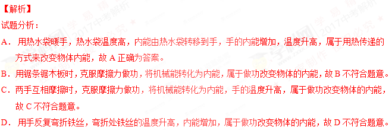
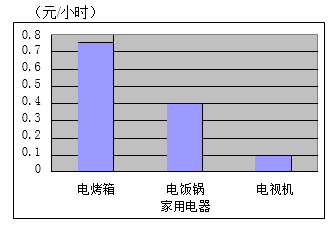
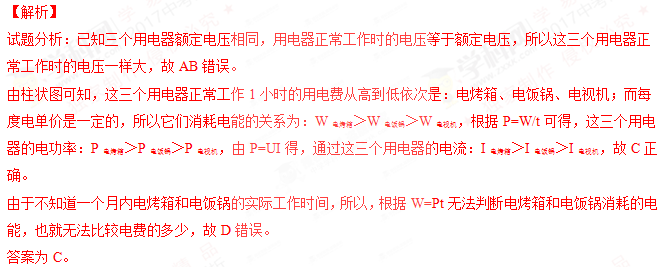
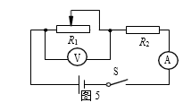
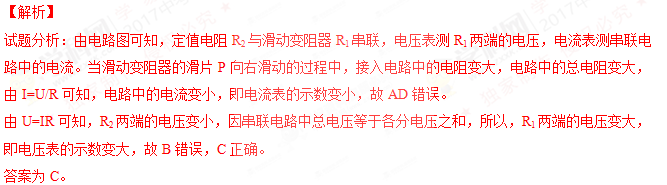
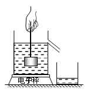

2017年北京市中考物理试题 · 选择题 第11、12、13、14、15题 · 对应解析
11．下列实例中，用热传递的方式来改变物体内能的是
A．用热水袋暖手，手的温度升高
B．用锯条锯木板，锯条的温度升高
C．两手相互摩擦，手的温度升高
D．用手反复弯折铁丝，弯折处铁丝的温度升高
【答案】A

考点：热传递改变物体内能
12．下列说法中正确的是
A．放大镜的镜片是凹透镜
B．照相机的镜头是 凹透镜
C．近视眼镜的镜片是凸透镜
D．远视眼镜的镜片是凸透镜
【答案】D
【解析】
试题分析：
A． 放大镜是凸透镜，当物体到透镜的距离小于焦距时，成正立、放大的虚像，故A错误。
B． 照相机的镜头是凸透镜，故B错误。
C． 近视眼镜是凹透镜，故C错误。
D． 远视眼的镜片是凸透镜，故D正确为答案。
考点：凸透镜
13．小玲家有额定电压相同的电烤箱、电饭锅和电视机各一个，按照每度电 0.5 元的计费标准，将这三个用电器 正常工作 1小时的用电费用绘制成了如图 4 所示的柱状图。则下列四个选项中，判断正确的是

A．在这三个用电器中，电烤箱正常工作时的电 压最高
B．在这三个用电器中，电视机正常工作时的电压最低
 C．正常工作时，通过电烤箱的电流大于通过电视机的电流
C．正常工作时，通过电烤箱的电流大于通过电视机的电流
D．在一个月内，小玲家电烤箱的用电费用一定比电饭锅的用电费用多
【答案】C

考点：电能
14．图 5 所示的电路中，电源两端的电压保持不变，R2 为定值电阻。闭合开关 S，在滑动 变阻器的滑片 P 向右滑动的过程中，关于电压表和电流表的示数变化，下列四个选项中，判断正确的是

A．电压表、电流表示数均变大
B．电压表、电流表示数均变小
C．电压表示数变大，电流表示数变小
D．电压表示数变小，电流表示数变大
【答案】C

考点：动态电路分析
15．为验证阿基米德原理，小明将电子秤放在水平桌面上并调零，然后将溢水杯放到电子秤上，按实验操作规范将溢水杯中装满水，再用细线系住铝块并将其缓慢浸入溢水杯 的水中，如图 6 所示，铝块始终不与溢水杯接触。则下列四个选项中，判断正确的是

A．铝块浸没在水中静止时与铝块未浸入水中时相比，水对溢水杯底的压力变小
B．铝块浸没在水中静止时与铝块未浸入水中时相比，水对溢 水杯底的压强变大
C．铝块浸没在水中静止时，绳对铝块的拉力等于铝块排开水的重力
D．铝块浸没在水中静止时与铝块未浸入水中时相比，若电子秤示数不变，则验证了阿基米德原理
【答案】D
【解析】
试题分析：
A．铝块浸没在水中静止时与铝块未浸入水中时相比，溢水杯中水的深度不变，根据公式p=ρgh可知，水对溢水杯底的压强不变，由压强公式F=pS可知，水对溢水杯底的压力不变，故A错误。
B．铝块浸没在水中静止时与铝块未浸入水中时相比，溢水杯中水的深度不变，根据公式p=ρgh可知，水对溢水杯底的压强不变，故B错误。
C．铝块浸没在水中静止时，绳对铝块的拉力F拉=G-F浮，故C错误。
D．铝块浸没在水中静止时与铝块未浸入水中时相比，若电子秤示数不变，则说明铝块受到的浮力等于排开水的重力，验证了阿基米德原理，故D正确。
答案为D。
考点：阿基米德原理
二、多项选择题